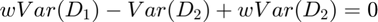
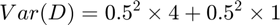

Contents
clear; close all; clc;
a)
There are two depth cues for the distance to the beach. Both of the cues are independent Gaussian random variables. These are unbiased cues implies that the expected value of the cue is equal to the actual value of the depth.
b)
Let the depth estimate due to the first cue be and the depth estimate due to the second cue be . Let the weightage given to the first cue be w. Therefore, the weightage given to the second cue will be 1-w. Hence, the combined estimate of depth becomes:
Therefore, the variance of the estimate will be:

Therefore,
An optimal observer would try to minimize the resulting estimate of the variance of depth. Therefore, the goal of the optimal observer would be to make the derivative of Var(D) = 0.
Solving for w:
Therefore,

Therefore,
Therefore,
We can check by taking the second-derivative of V that this is indeed the w that minimizes the variance of the estimate.
The given variances of the two cues are:
Substituting back into the formula for w, we get:
Also,
Therefore, an optimal observer would give a weight of 0.2 to the first cue and a weight of 0.8 to the second cue. Plugging the weights back into the formula for computing the variance of the output, we get:
Therefore,
Therefore,
Therefore,
c)
If, instead, equal weigths were given to the two cues, then we have:
Therefore, the estimates of the variance of the depth now becomes:

Therefore,
Therefore,
Therefore,
The difference between the variance of the optimal estimator and this estimator is 1.25 - 0.8 = 0.45
d)
As can be seen, the "average cue" has a higher variance than the second cue. Therefore, David would be better off selecting just the second cue and ignoring the first cue instead of averaging the two cues.